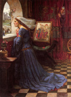

главная  персоналии
персоналии  Клара Андузская
Клара Андузская
главная |

Личность в историикраткая энциклопедияПроект «Личность в истории» посвящен людям — современникам грандиозных исторических событий, носителям редких качеств или людям, взгляды которых опередили их время. |
|||||
Коротко |
Статьи |
Персоналии |
Литература |
||
Клара Андузская |
|||||
|
«Люди разного звания и положения, женщины и мужчины пели о любви, о весне, о веселых и грустных событиях в человеческой жизни». Б. Пуришев, |

Дж. У. Ватерхауз. Прекрасная Розамунда, 1917. |
||||
Биографическая справкаКлара Андузская (первая половина XIII в.) Французская средневековая поэтесса. О ней практически не сохранилось никаких биографических данных. Предположительно, это знатная дама из Андузы. В «биографии» поэта Ука де Сен-Сирка, жившего во второй половине XIII в., есть сведения о его долгом и драматическом романе с некоей «дамой из Андузы». Скорее всего, это и была Клара Андузская. ??з творчестваЗаботами наветчиков моих, Но толков я не побоюсь людских. Пусть тяжко мне, пускай удел мой лих, * * * Вот милый друг, и все мои писанья — (Перевод Валентины Дынник) Список литературы
|
|||||
|
{kind=link}